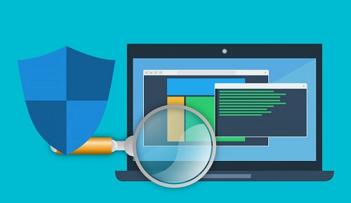

1. Virus y Antivirus
Nuestros clientes utilizan un antivirus gratuito en sus equipos informáticos. vamos a aprender algunas cosas sobre los virus y cómo seleccionar un buen antivirus.
Con la gran cantidad de información importante que va de ordenador a ordenador en todo el mundo, ha aumentado el riesgo de troyanos, virus, malware, spyware y otras amenazas digitales. Normalmente a todos se les califica de forma genérica como virus pero no son lo mismo.
Las tasas de infección seguirán aumentando, ya que las nuevas amenazas, como el ransomware y el spyware, son cada vez más frecuentes. Los virus actuales siguen funcionando como los tradicionales, pero se han vuelto mucho más sofisticados para engañar e infectar, a un mayor número de usuarios y empresas.
Diferencias entre Virus , troyanos y gusanos:
Virus
- Un virus informático se adhiere a un programa o archivo para poder propagarse de un equipo a otro e infectarlos a medida que se desplaza.
- Al igual que los virus naturales, la gravedad de los virus informáticos puede variar: algunos solo causan leves molestias, mientras que otros pueden dañar hardware, software o archivos.
- Casi todos los virus se adjuntan a un archivo ejecutable, lo que significa que los virus pueden encontrarse en su equipo pero no pueden afectarle a menos que abra o ejecute el programa malicioso.
- Hay que destacar que los virus no se pueden propagar sin intervención humana, como cuando ejecutamos un programa infectado.
- Los usuarios propagan un virus informático, casi siempre de manera involuntaria, compartiendo archivos infectados o enviando mensajes de correo electrónico con virus en archivos adjuntos.
Gusanos
- Los gusanos se propagan de ordenador en ordenador pero, a diferencia de los virus, tienen la capacidad de desplazarse sin intervención humana.
- Un gusano se aprovecha de las funciones de transferencia de archivos o de información del sistema, que le permiten viajar por sus propios medios.
- El mayor peligro de un gusano es su capacidad de replicarse en su sistema. Es decir, en lugar de enviar un solo gusano, su equipo puede enviar centenares o miles de copias de sí mismo, lo que puede tener consecuencias devastadoras. Por ejemplo, un gusano envía una copia de sí mismo a todos los nombres que aparecen en su libreta de direcciones de correo electrónico. A continuación, el gusano se replica y se envía a todas las personas que figuran en la libreta de direcciones de cada uno de los destinatarios originales, y así sucesivamente.
- Debido a su facilidad innata de replicarse y a su capacidad para desplazarse por las redes, en la mayoría de los casos, el gusano consume demasiada memoria del sistema o ancho de banda de la red. Como consecuencia, los servidores de las redes, los servidores web y los equipos dejan de responder.
- En los ataques de gusanos más recientes, como el famoso .Blaster Worm., este se diseñó para acceder a los sistemas a través de un túnel y permitir a los usuarios maliciosos controlarlos remotamente.
Troyanos
- Un troyano no es un virus, sino un programa destructivo que se hace pasar por una aplicación auténtica.
- A diferencia de los virus, los troyanos no se replican, pero pueden ser igual de dañinos.
- Además, los troyanos abren una puerta trasera en el equipo que facilita a usuarios y programas maliciosos el acceso a un sistema para robar información personal y confidencial.
Virus que se aprovechan de agujeros de seguridad antes de ser descubiertos y que se creen parches.
El análisis heurístico es un proceso utilizado para descubrir problemas de usabilidad y seguridad en cualquier app o sitio web.
El Spyware, también denominado spybot, es un programa malicioso espía. Se utilizada para recopilar información de un ordenador o dispositivo informático y transmitir la información a una entidad externa sin el permiso del dueño del ordenador.
 Con la información obtenida anteriormente, junto con tu compañero o compañera, selecciona un antivirus ideal para proteger tu ordenador.
Con la información obtenida anteriormente, junto con tu compañero o compañera, selecciona un antivirus ideal para proteger tu ordenador.